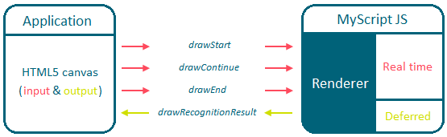
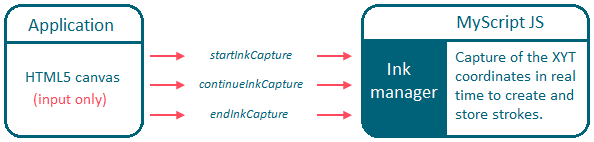
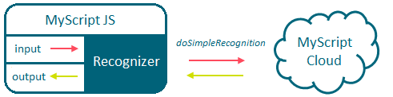
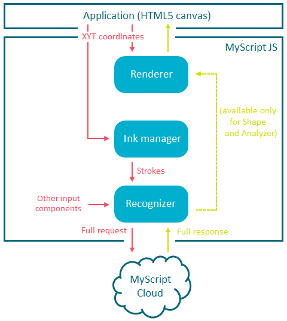

A stroke is defined as the trajectory of the pen or the finger from the moment it touches the surface until it is lifted. It is represented as a sequence of 2D points (XY) ordered by time (T).
The renderer is an object that allows to draw on an HTML canvas. Its function is to manage the input and output display (ink size, font, color, etc.). It is a feature only designed to simplify writing on a canvas, and is thus only mandatory if you want an output drawn on a canvas.
The renderer that you define depends on the type of recognition you want to achieve.

The ink manager is an object where strokes are built and stored. It is initiated when the startStrokeWriting method is called. When captured, strokes can be sent to the MyScriptJS recognizer via the getStrokes method. Strokes are stored in the ink manager until the clear method is called. You can also create your strokes manually and in that case, an ink manager is not required.
Whatever the type of recognition you want to achieve, the ink manager is the same.

There is one recognizer per protocol (REST or WebSocket) and per recognition type (Text, Math, Shape, Analyzer or Music).
The recognizer is the interface between MyScriptJS and MyScript Cloud. Its role is to manage the recognition within MyScriptJS by sending requests and receiving responses to and from MyScript Cloud.
The recognizer can only receive input components: In most cases, these are strokes, but can also be strings, characters, music clefs, etc.
For example: for REST requests, the recognizer sends the input (strokes) to MyScript Cloud via the doSimpleRecognition method. If the request is OK, MyScriptJS creates an object cluster as an output, based on the MyScript cloud feedback. If the request is not OK, it sends an error message explaining why the request is not correct.

